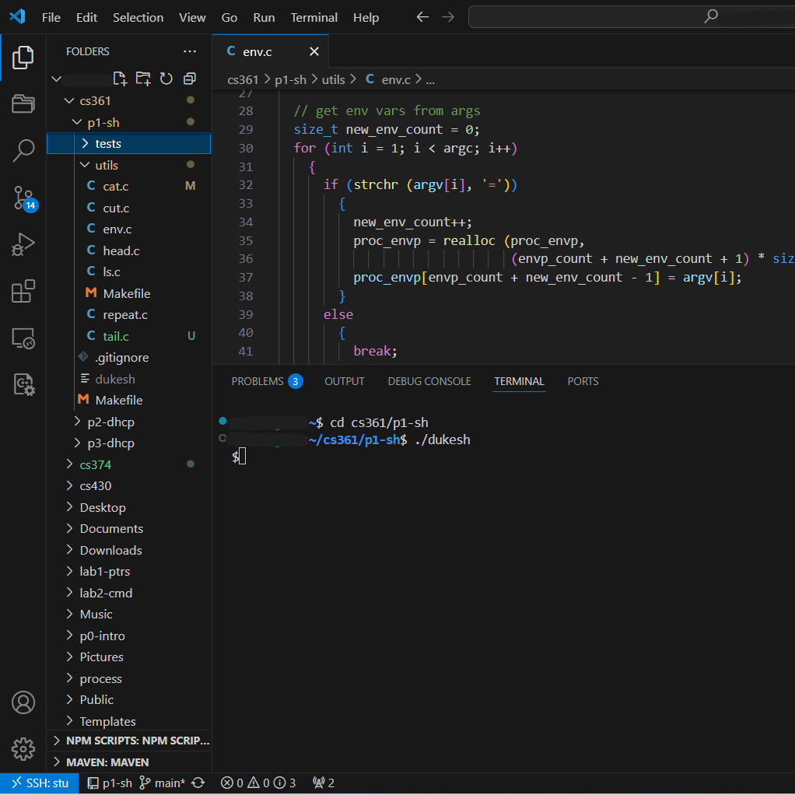

Shell
C Program · August 2024 – December 2024
Overview
- Developed a custom shell in C that supports executing built-in and external commands, handling input/output, managing background processes, and working with environment variables.
- Used Git for version control throughout the project.
- Enhanced understanding of process management, system calls, and environment handling in Unix-like systems.
- Sharpened skills in C programming and collaborative development.
Media
